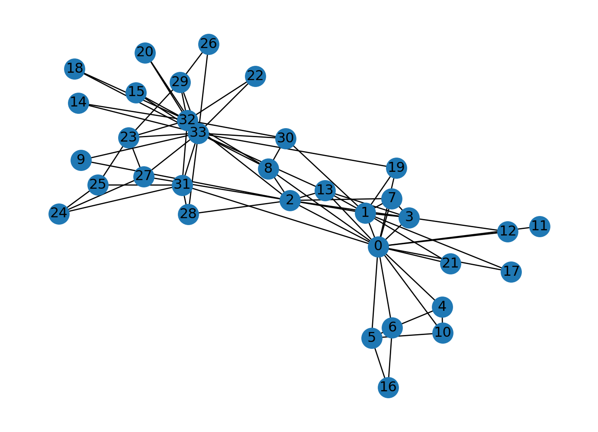
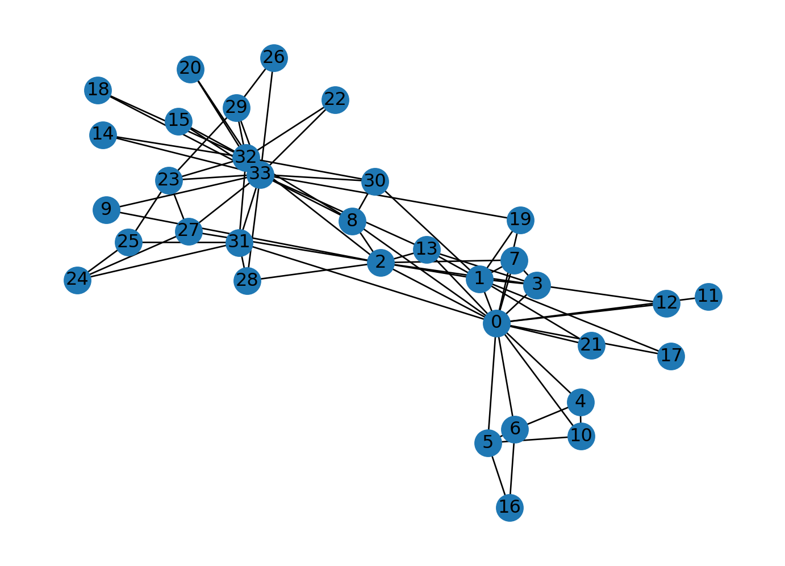

Code
import networkx as nx
G = nx.karate_club_graph()
nx.draw(G, with_labels=True)
⏳ Duration: 1.5h
🯠Lecture Objective
Understanding how data has evolved in different industries and the tools used for its analysis today.
In this lecture, we will present the evolution of data analysis, showing how technologies and approaches to data processing have changed over the years.
We will start with classical tabular structures, move through more advanced graph and text models, and finish with modern approaches to stream processing.
Initially, data was stored in tables, where each table contained organized information in columns and rows (e.g., SQL databases).
Such models were perfect for structured data.
✅ Data divided into columns with a fixed structure.
✅ CRUD operations (Create, Read, Update, Delete) can be applied.
✅ Strict consistency and normalization rules.
➡️ Banking systems, e-commerce, ERP, CRM systems.
import sqlite3
conn = sqlite3.connect(':memory:')
cursor = conn.cursor()
cursor.execute("CREATE TABLE users (id INTEGER PRIMARY KEY, name TEXT, age INTEGER)")
cursor.execute("INSERT INTO users (name, age) VALUES ('Alice', 30)")
cursor.execute("SELECT * FROM users")
print(cursor.fetchall())
conn.close()As business needs grew, graph data emerged, where relationships between objects are represented as nodes and edges.
✅ Data describing relationships and connections. ✅ Flexible structure (graphs instead of tables). ✅ Allows analysis of connections (e.g., PageRank algorithms, centrality).
➡️ Social networks (Facebook, LinkedIn), search engines (Google), recommendation systems (Netflix, Amazon).
import networkx as nx
G = nx.karate_club_graph()
nx.draw(G, with_labels=True)
These data are not fully structured like in SQL databases, but they have some schema.
✅ Hierarchical structure (e.g., key-value pairs, nested objects). ✅ No strict schema (possibility to add new fields). ✅ Popular in NoSQL systems and APIs.
➡️ Documents in MongoDB, configuration files, REST APIs, log files.
import json
data = {'name': 'Alice', 'age': 30, 'city': 'New York'}
json_str = json.dumps(data)
print(json.loads(json_str)){'name': 'Alice', 'age': 30, 'city': 'New York'}Text has become a key source of information, especially in sentiment analysis, chatbots, and search engines.
✅ Unstructured data requiring transformation. ✅ Use of embeddings (e.g., Word2Vec, BERT, GPT). ✅ Widely used in sentiment analysis and chatbots.
➡️ Social media, emails, chatbots, machine translation.
import ollama
# Przykładowe zdanie
sentence = "Artificial intelligence is changing the world."
response = ollama.embeddings(model='llama3.2', prompt=sentence)
embedding = response['embedding']
print(embedding[:4])[-2.021953582763672, 1.5604140758514404, -0.5358548164367676, -1.3182345628738403]Modern data analysis systems also use images and sound.
✅ Require significant computational power (AI, deep learning). ✅ Processed by CNN models (images) and RNN/Transformers (sound).
➡️ Face recognition, speech analysis, biometrics, video content analysis.
import cv2
image = cv2.imread('cloud.jpeg')
cv2.waitKey(0)
cv2.destroyAllWindows()Currently, streaming data analysis is rapidly evolving, where data is analyzed as it flows in real-time.
✅ Real-time processing. ✅ Technologies such as Apache Kafka, Flink, Spark Streaming.
➡️ Bank transactions (fraud detection), social media analysis, IoT.
import time
transactions = [{'id': 1, 'amount': 100}, {'id': 2, 'amount': 200}]
for transaction in transactions:
print(f"Processing transaction: {transaction}")
time.sleep(1)Processing transaction: {'id': 1, 'amount': 100}
Processing transaction: {'id': 2, 'amount': 200}Data from sensors and IoT devices is the next step in evolution.
✅ Often comes from billions of devices (big data). ✅ Requires edge computing analysis.
➡️ Smart homes, wearables, autonomous cars, industrial systems.
🖥️ Example Python Code (Sensor - Temperature):
import random
def get_temperature():
return round(random.uniform(20.0, 25.0), 2)
print(f"Current temperature: {get_temperature()}°C")Current temperature: 23.05°CData is generated in an unlimited manner—it appears as a result of continuous system operations.
Today, you have generated a lot of data on your phone (even during this lecture!).
Will you not generate data in the next session or tomorrow?
Data is always generated as a form of a data stream.
📌 Systems handling data streams:
A company is an organization that generates and responds to a continuous stream of data.
In batch processing, the source (and also the result) of data processing is a file.
It is written once and can be referenced multiple times (multiple processes or tasks can operate on it).
The file name serves as an identifier for the set of records.
In the case of a stream, an event is generated only once by a so-called producer (also referred to as a sender or provider).
The generated event can be processed by multiple so-called consumers (receivers).
Streaming events are grouped into so-called topics.
When should you make a business decision?

When we talk about scalable data processing, the first association might be Google.
But what actually enables us to search for information in a fraction of a second while processing petabytes of data?
👉 Did you know that the name “Google†comes from the word “Googol,†which represents the number 10¹â°â°?
That’s more than the number of atoms in the known universe! 🌌
Traditional SQL databases and single-threaded algorithms fail when data scales beyond a single computer.
This is where MapReduce comes in—a revolutionary computational model developed by Google.
✅ Google File System (GFS) – a distributed file system.
✅ Bigtable – a system for storing massive amounts of structured data.
✅ MapReduce – an algorithm for distributing workloads across multiple machines.
Each input is divided into smaller parts and processed in parallel.
🌠Imagine you have a phone book and want to find all people with the last name “Nowak”.
➡️ Divide the book into sections and give each person one section to analyze.
All partial results are combined into one final answer.
🔄 All students report their findings, and one student collects and summarizes the response.

Let’s assume we have millions of books and we want to count how many times each word appears.
from multiprocessing import Pool
from collections import Counter
# Map function (splitting text into words)
def map_function(text):
words = text.split()
return Counter(words)
# Reduce function (summing up results)
def reduce_function(counters):
total_count = Counter()
for counter in counters:
total_count.update(counter)
return total_count
texts = [
"big data is amazing",
"data science and big data",
"big data is everywhere"
]
if __name__ == '__main__':
with Pool() as pool:
mapped_results = pool.map(map_function, texts)
final_result = reduce_function(mapped_results)
print(final_result)
# Counter({'data': 4, 'big': 3, 'is': 2, 'amazing': 1, 'science': 1, 'and': 1, 'everywhere': 1})✅ Each text fragment is processed independently (map). ✅ The results are collected and summed (reduce). ✅ Outcome: We can process terabytes of text in parallel!

📊 Old Approach – A single computer processes everything sequentially.
📊 New Approach (MapReduce) – Each machine processes a fragment, and the results are aggregated.

🔹 Find and run your own MapReduce algorithm in any programming language!
🔹 Can you implement your own MapReduce for a different task? (e.g., log analysis, counting website clicks)
Big Data systems can serve as a source for data warehouses (e.g., Data Lake, Enterprise Data Hub).
However, Data Warehouses are not Big Data systems!
“Big Data is like teenage sex: everyone talks about it, nobody really knows how to do it, everyone thinks everyone else is doing it, so everyone claims they are doing it.”
— Dan Ariely, Professor of Psychology and Behavioral Economics, Duke University
“The purpose of computing is insight, not numbers.†– R.W. Hamming, 1962.
Data has always been processed in business.
Over the past decades, the amount of processed data has been steadily increasing, affecting the way data is prepared and handled.
Most data is stored in databases or data warehouses.
Typically, data access is performed through applications by executing queries.
The method of utilizing and accessing a database is called the data processing model.
The two most commonly used implementations are:
The traditional model refers to online transaction processing (OLTP),
which excels at handling real-time tasks such as customer service, order management, and sales processing.
It is commonly used in Enterprise Resource Planning (ERP) systems, Customer Relationship Management (CRM) software, and web-based applications.

This model provides efficient solutions for:
However, what happens when we need to deal with:
Research on these topics led to the formulation of a new data processing model and a new type of database – Data Warehouses.
Online Analytical Processing (OLAP)
OLAP supports data analysis and provides tools for multidimensional analysis
based on dimensions such as time, location, and product.
The process of extracting data from various systems into a single database is known as Extract-Transform-Load (ETL),
which involves normalization, encoding, and schema transformation.
Analyzing data in a data warehouse mainly involves calculating aggregates (summaries) across different dimensions.
This process is entirely user-driven.
Imagine we have access to a data warehouse storing sales information from a supermarket.
How can we analyze queries such as:
Answers to these questions help identify bottlenecks in product sales, plan inventory levels, and compare sales across different product groups and supermarket branches.
In a Data Warehouse, two types of queries are most commonly executed (both in batch mode):